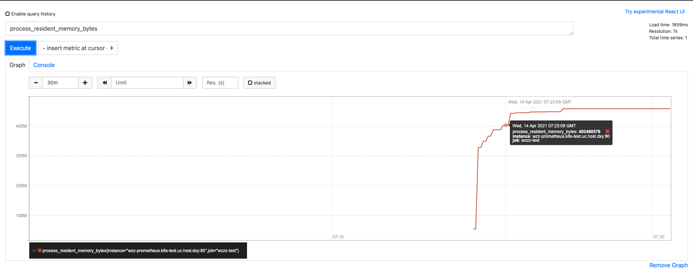
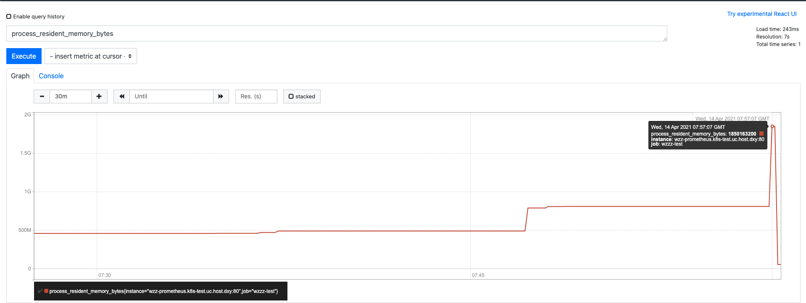
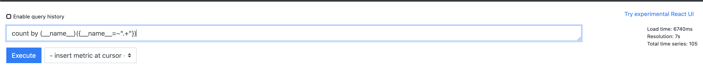
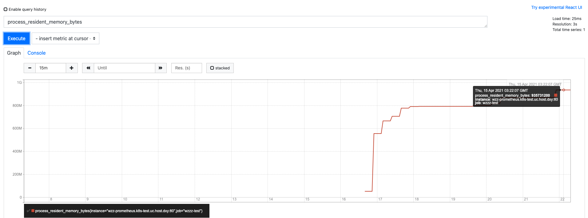
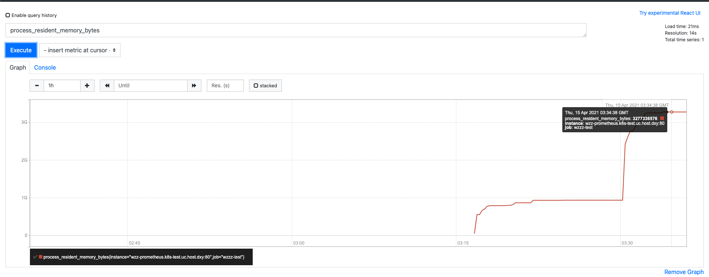
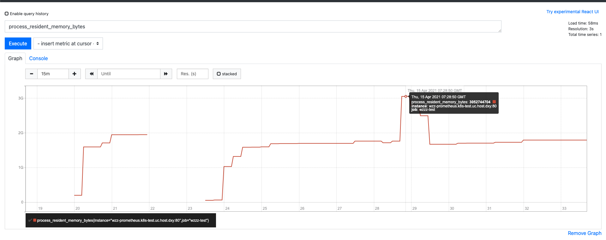

测试环境
目前在线下K8S集群搭建两套Prometheus服务，使用的都是2.19版本，一个具有读写功能，一个只有读取功能，数据都是远程存储到在宿主机上部署的influxdb上。
测试背景
线上Prometheus均是在线上K8S集群上部署，根据不同的采集服务分配不同的内存限额，从几百M到几G不等。同时在Grafana中以Prometheus作为数据源，配置Dashboard图标，一个Dashboard中会有多张图，配置多条查询Prometheus语句，在大规模查询数据时，例如在Dashboard页面修改查询数据时间，会出现查询数据时Prometheus OOM，导致Pod重启，甚至会大规模Prometheus不可用。为找出Prometheus内存使用情况及瓶颈，进行此次压力测试。
基础知识
在测试之前，我们需要明确一些基础概念和Prometheus的基础知识。众所周知，Prometheus 所有采集的监控数据均以指标metric的形式保存在内置的时间序列数据库当中TSDB：属于同一指标名称，同一标签集合的、有时间戳标记的数据流。除了存储的时间序列，Prometheus 还可以根据查询请求产生临时的、衍生的时间序列作为返回结果。
同时Prometheus也支持外部存储，因为其使用的是时序数据库，所以支持Influxdb、OpenTSDB等时序数据库，其中最主流的就是就是这两个，Prometheus对InfluxDB支持读写操作，对OpenTSDB仅支持写操作，所以一般使用InfluxDB作为外部存储的数据库。
回到他的存储结构，既然它是时序存储，那么它的数据模型是什么样的？每一条时间序列由指标名称（Metrics Name）以及一组标签（键值对）唯一标识。其中指标的名称（metric name）可以反映被监控样本的含义（例如，http_requests_total — 表示当前系统接收到的 HTTP 请求总量），指标名称只能由 ASCII 字符、数字、下划线以及冒号组成，同时必须匹配正则表达式 [a-zA-Z_:][a-zA-Z0-9_:]*。这是官方的回答，简单说就是没有关系型数据库的一条一条数据的概念，在Prometheus中所有的数据都是一条时间序列time series，这一条时间线是由metricname指标名和一组label标签来确定的，举个例子🌰:
1 | wzzz_key1{lable="wzzz_label1",} |
这就是一个时间序列time series，其中wzzz_key1就是这个时间序列time series的metric，wzzz_lable就是这个时间序列的标签，他们组成了唯一标识，确定一个time series。
关于他的数据采集，是通过访问target来获取数据的，那么什么是target呢？target就是一个监控目标，一个Job通过服务发现会得到多个需要监控的target，其中包含一些label用于描述target的属性。举个例子🌰：
1 | scrape_configs: |
这是一份Prometheus的yarml文件中的配置，localhost:8080就是一个target，而在targets这个配置中可以写很多个target，写多少个target，Prometheus就会去采集多少个目标路径的指标。
那么显而易见，Prometheus的内存使用主要与series相关，根据腾讯的测试结果https://cloud.tencent.com/developer/article/1750442也是这个结论，那么这次测试就主要针对series的相关性进行。
测试方案
造数据
首先我们要有测试数据，可以选择造一些假数据方便控制变量观察结果。
1 | for (int i = 0; i <100 ; i++) { |
上面就是造假数据的代码段，造假数据很简单，只需要规定好需要多少series,然后启动服务，让Prometheus去采集metric就好了。
建数据库
在前面已经说过，我们使用的是远程存储，所有的数据都存在InfluxDB中，所以我们需要启动InfluxDB服务，并创建对应的数据库。
1 | > |
上面就是创建库的具体过程，可以看到库建好了之后，并启动Prometheus后，在test库中就会有5个measurements，这是Prometheus自己创建的，并不是我门采集到的metric。
采集数据
然后开始采集数据
1 | > select * from _internal.."database" where "database"='test' order by time desc limit 1 |
查询库中的信息，可以看到目前是有100005个series，1005个Measurements，意思就是我造的数据有100个metric，每个metric有1000个label，组合起来就是有100000个series。等待Prometheus平稳运行后，此时prometheus的资源占用情况：
内存使用：458M

在积累半个小时的数据之后，执行一条查询全量数据的命令，查看Prometheus的内存占用以及查询语句的耗时，原本计划查询10000个series的数据，观察他的内存占用以及耗时，但是结果并不明显，内存使用并没有明显变化，最后才统计么每个Metric的label数量，就是查询全部的series个数。

此时内存使用到1.8G，差一点就超过了我给的2G限额。但是即便是这样，在K8S集群中的Pod也已经重启了。已经出现了OOM，但是数据还是查询出来了，耗时7秒。
这只是10W量级的series
接下来测试20W量级的series。
1 | > show databases |
现在在InfluxDB中已经存在了200000条series，等待Prometheus运行平稳观察所用的内存，已经使用到了935M。

然后查询全量series个数，查看其使用内存。 内存使用已经使用到3.2G，查询耗时34秒
内存使用已经使用到3.2G，查询耗时34秒

这只是聚合了所有的series数量，内存占用还是非常可观的，这已经超出了我们线上环境分配的内存用量。而线上的一套Prometheus采集的series数量可以达到36万。
测试结果
2.17版本
| sdries数量(万) | 内存使用(G) | 统计全量series耗时(秒) |
查询消耗内存(G) |
|---|---|---|---|
| 10 | 0.43 | 7 | 1.76 |
| 20 | 0.85 | 20 | 3.27 |
| 30 | 1.25 | 27 | 4.54 |
| 40 | 1.75 | 40 | 4.47 |
2.19版本
| sdries数量(万) | 内存使用(G) | 统计全量series耗时(秒) |
查询消耗内存(G) |
|---|---|---|---|
| 10 | 0.45 | 7 | 1.8 |
| 20 | 0.93 | 34 | 3.2 |
| 30 | 1.25 | 36 | 4.5 |
| 40 | 1.9 | timeout | 5 |
2.26版本
| sdries数量(万) | 内存使用(G) | 统计全量series耗时(秒) |
查询消耗内存(G) |
|---|---|---|---|
| 10 | 0.42 | 7 | 1.2 |
| 20 | 0.86 | 10 | 2.4 |
| 30 | 1.22 | 19 | 2.8 |
| 40 | 1.69 | 32 | 3 |
最终结论
根据以上测试结果可以看出，Prometheus占用内存还是比较大的，随着series的增多，相应的运行时占用内存也会增多，成正相关性，查询时消耗内存同理。而在查询单个metric的具体series时内存占用并不会明显增多，所以一般Prometheus内存突然变多，大概率是因为查询量过大，而一下几点操作会引发这种情况：
- 查询数据的时间跨度过长
- 查询单个
Metric的label数过多 - 使用正则表达式查询多条指标
- 不规范的使用group by等聚合语句
以上情况都会使得Prometheus内存使用激增，导致Prometheus因OOM而崩溃。这里还涉及到Prometheus的存储结构和储存方式，这里就不细说了。
优化方案
针对以上情况，可以有以下几种优化方案
- 梳理采集指标，合理选择需要采集分析的指标，尽量减少
series数量 - 规范查询语句，规范
group by以及正则表达式的使用 - 设置Prometheus返回值上限，限定Prometheus返回的数据大小，可在Prometheus的启动命令通过
--query.max-samples参数设定 - 尽量避免并发的长时间跨度的查询
- 升级到Prometheus2.20以后版本，2.20以后的版本优化了正则查询的性能，优化了内存占用的问题。
1
[ENHANCEMENT] PromQL: Optimized regex label matching for literals within the pattern or as prefix/suffix. #7453 #7503